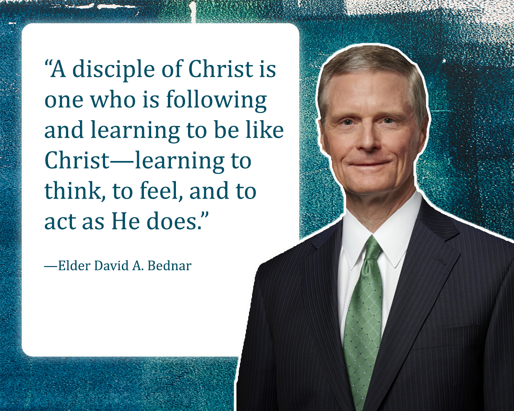
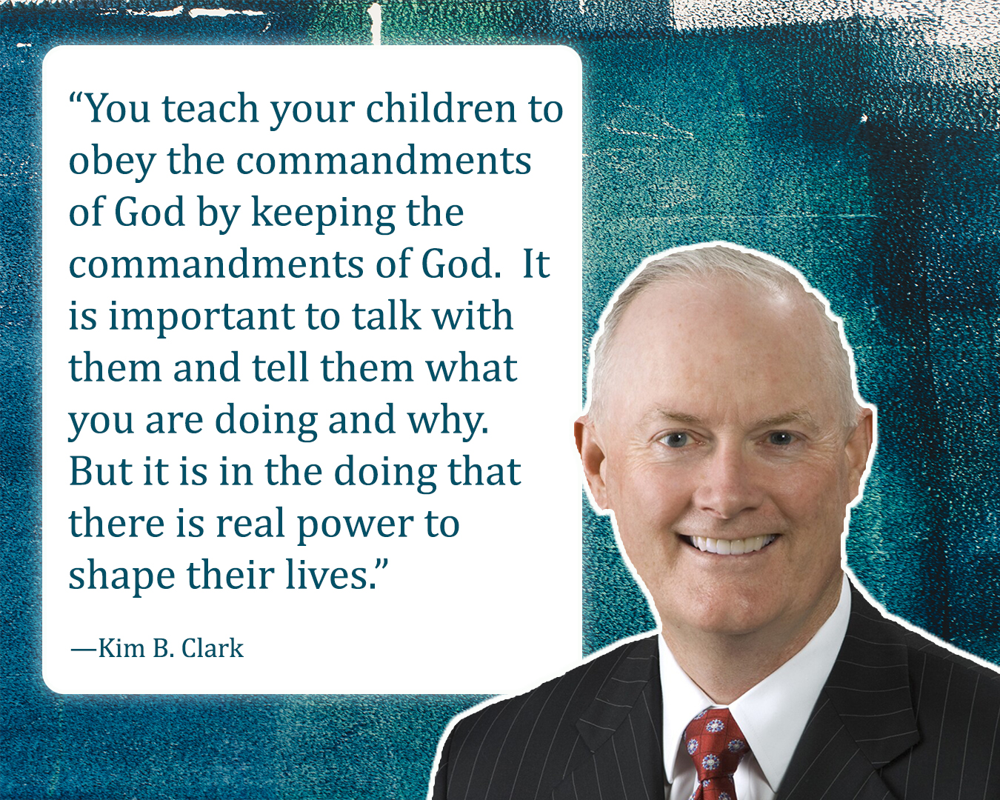
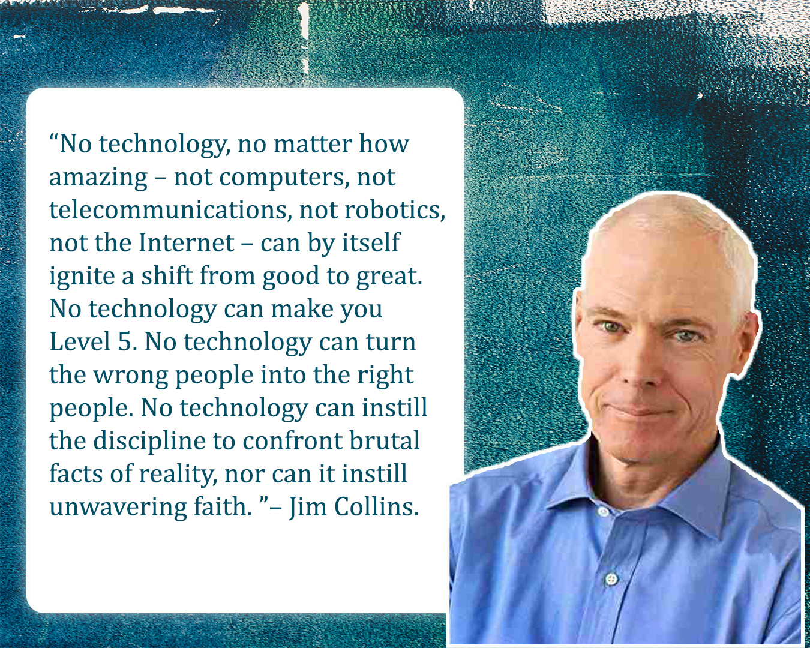
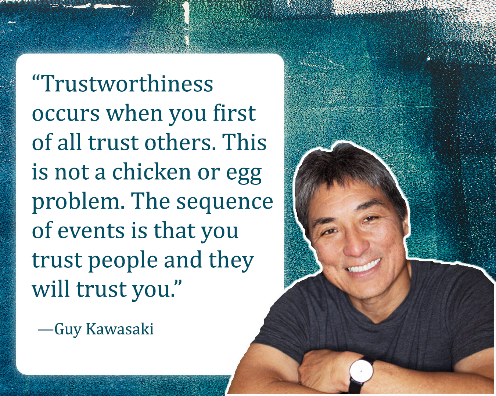
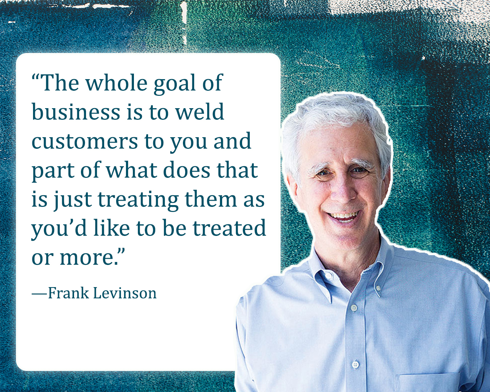
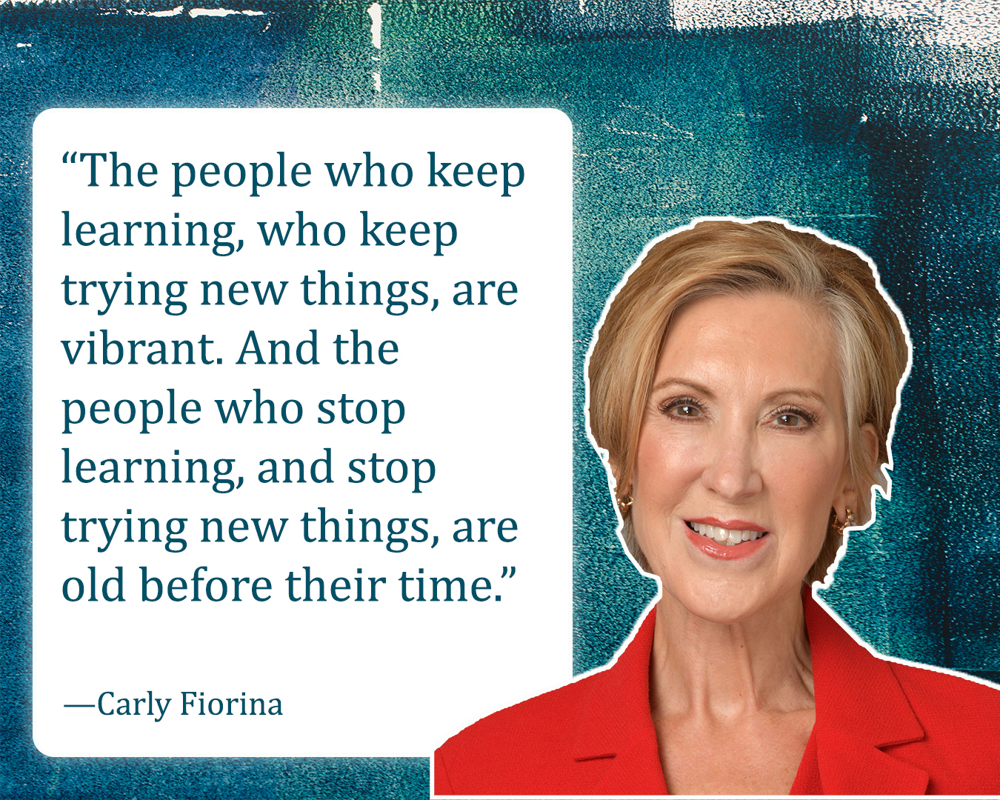
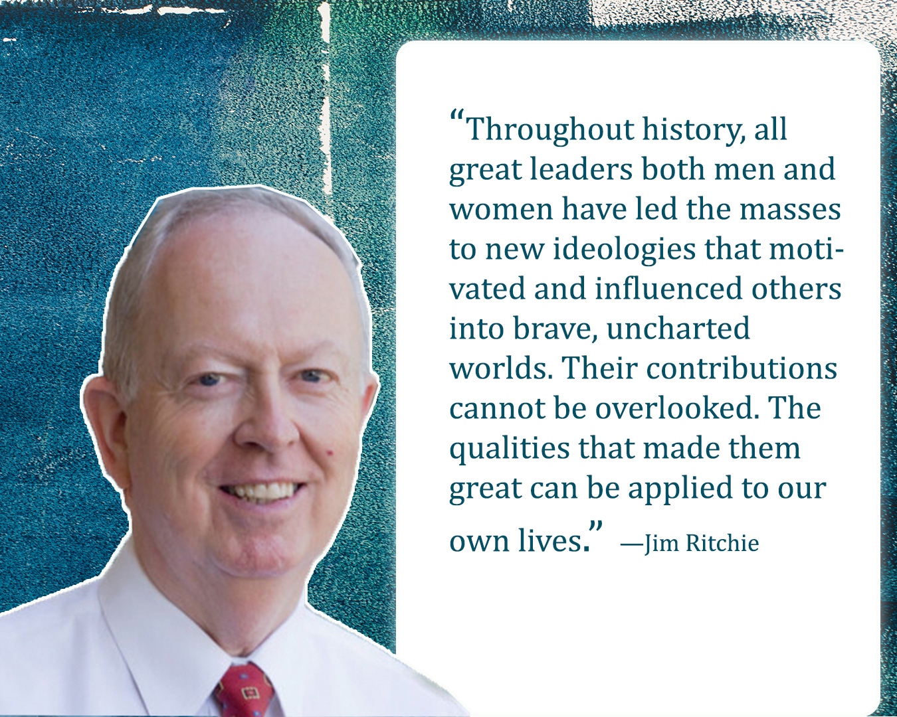
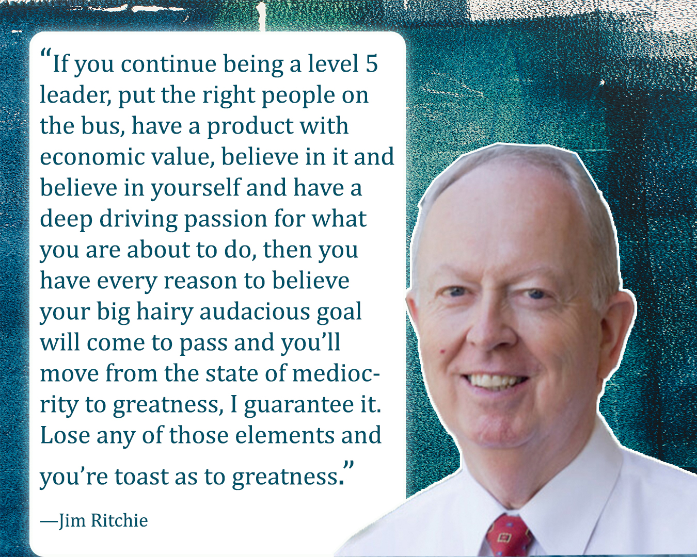

Week 09- Journal Entry
A Disciple Preparation Center (DPC)

Listening to David A. Bednar teach that Brigham Young University–Idaho is a “Disciple Preparation Center” touched my heart in a very personal way. He explains that a disciple is someone who follows and learns from Christ, that preparation means being made ready, and that a center is a place from which influence flows into the world. I feel incredibly blessed to be a student there, even online. Sometimes I imagine how different life might have been if I had studied on campus when I was younger, and I wonder what shape those years would have given me. But I also feel peace knowing that the Lord’s timing is perfect. In this season of my life, as an adult learner, I am grateful to grow professionally while intentionally inviting the Savior into my education.
What makes BYU–Idaho special to me is that it is more than a university. Elder Bednar describes it as a temple of learning, surrounded by strong stakes of Zion, a place designed to prepare disciples for the latter days. His three lessons stay with me: faith must be centered in Jesus Christ, faith is a gift from God, and preparation dispels fear. I do not want to leave this experience with only knowledge for a career; I want to leave with deeper faith and greater courage. In a world that feels increasingly uncertain, I am thankful to study in a place that strengthens my testimony and helps me become not just a professional, but a more devoted disciple of the Lord.
Leadership with a Small "L"

President Kim B. Clark’s message about leadership with a small “L” really touched me. True leadership, he teaches, is not about authority, titles, or control. It is about following Christ’s example, serving, uplifting, and inspiring others through kindness, humility, and selfless devotion to God’s work. This feels so personal to me as a parent and as a student of the gospel. In my home, I know that if I only teach words without living them, my children will follow my actions, not my instructions. Leading with example means living gospel principles daily, showing faith in Christ, and nurturing my family with patience and love.
He also shared three essential principles of leadership that I want to apply in my life. First, lead by example. My actions must teach more than my words. Second, lead with vision. I can help my children and those around me see the eternal purpose behind everyday tasks, obedience, and family life. Third, lead with love. I can put love into action through support, guidance, prayer, and service. These teachings can be applied wherever we serve and lead, at home, at church, at work, and in our communities. President Clark’s counsel reminds me that my highest responsibility is to follow Christ’s example in everything I do so that my family, my home, and my influence in the world reflect His love, light, and truth.
Good to Great

What really stood out to me in this reading is that true greatness, as taught by Jim Collins in Good to Great, is not about showing off or being the smartest person in the room. It comes from humility, consistent effort, and caring more about the mission than personal recognition. I was especially inspired by his idea of “First Who, Then What,” because having the right people around you makes everything easier and more effective. The flywheel concept also really resonated with me, showing that even though the beginning is hard, steady, persistent effort over time creates remarkable results. Collins’ teachings reminded me that patience, discipline, and focusing on what truly matters can transform ordinary efforts into something meaningful and lasting.
Aspects of Building Trust

I learned from this video by Guy Kawasaki that trust begins with choosing to trust others first. When we show trust, people are more likely to trust us in return. I also realized the importance of seeing the world like a baker, creating opportunities and helping others grow instead of thinking every gain comes at someone else’s loss. One of the most meaningful lessons for me was the idea of defaulting to yes and focusing on how I can help others rather than what they can do for me. Applying these principles can strengthen relationships, build trust, and allow me to make a positive difference in the lives of the people around me.
Hiring Ethical People

Watching Frank Levinson speak about hiring ethical people reminded me how much character matters in everything we do. I love what he says, "The whole goal of business is to weld customers to you and part of what does that is just treating them as you’d like to be treated." This made me realize that true success is not just about skills or strategies but about treating others with kindness, fairness, and integrity. Whether at home, at work, or in my community, living with honesty and care builds trust, strengthens relationships, and inspires others. Small, consistent acts of decency and responsibility create a lasting impact and show that ethical behavior is the foundation of meaningful and enduring success.
Leadership and Capability

I loved listening to Carly Fiorina’s message. She emphasizes that true leadership is built on three pillars: capability, collaboration, and character. What really stood out to me is her focus on innovation, risk-taking, and celebrating new ideas, because old solutions eventually stop working and creativity becomes essential. I was especially inspired by her point about lifelong learning, explaining that those who keep learning and adapting remain vibrant and effective leaders, while those who stop growing stagnate. This reminded me to always stay curious, embrace change, and keep developing myself in every area of life.
Achieving Higher Ground

I loved this video by Jim Ritchie. He shared stories of incredible leaders whose courage, sacrifice, and conviction made a lasting impact on me. From Captain Moroni’s commitment to protecting his people to Mahatma Gandhi’s peaceful leadership, each example showed how true leaders uplift others and stand firm for what’s right. I was particularly moved by how Ritchie tied these leaders’ actions to our own potential to rise to higher ground. It made me realize that leadership isn’t just about making decisions; it’s about having the courage to act on principles and inspiring others to do the same. True leadership calls us not just to follow, but to stand up for what matters and lead by example.
Good to Great

This message reminded me that good is often the enemy of great, and that it is easy to become comfortable and never reach my full potential. Jim Ritchie emphasized that greatness begins with humble but determined leadership, surrounding yourself with the right people, and believing deeply in your purpose. It helped me reflect on the importance of choosing carefully who I learn from and work with, and making sure my efforts are aligned with something meaningful and worthwhile.
I was especially touched by the teaching that greatness happens when three things come together: doing something that has real value, believing that you can become your best, and having true passion for it. This reminded me that achieving something meaningful requires faith, commitment, and consistent effort. It encouraged me to not settle for mediocrity, but to continue growing, setting meaningful goals, and striving to become better in every area of my life.
Entrepreneur Interview preparation
This week 9, I spent time contacting two local business owners to interview for my assignment. I think it is really important to have a Plan A and Plan B so I am prepared no matter what happens. I brainstormed possible questions that would be valuable to help me write my essay, focusing on learning about their inspiration, challenges, lessons learned, skills, personal growth, and advice for others.
Nicole Affleck is an incredible woman, smart, talented, and accomplished. I have met her twice and every time her presence is inspiring. She also makes everyone around her feel valued. I am excited to learn from her experience and the way she balances her business, personal life, and faith. Emily Henrich, the owner of Dirty Pop Drink Shop, is also someone I admire for her boldness, energy, and creativity. I reached out to her by email and text, but she has not responded. Because of that, Nicole is going to be my Plan A for the interview.
Having both options has helped me feel more confident about completing this assignment and ensuring I can gather meaningful insights for my essay. I feel like this process is already teaching me the importance of preparation, flexibility, and thinking ahead, which are skills that are valuable for any entrepreneur.